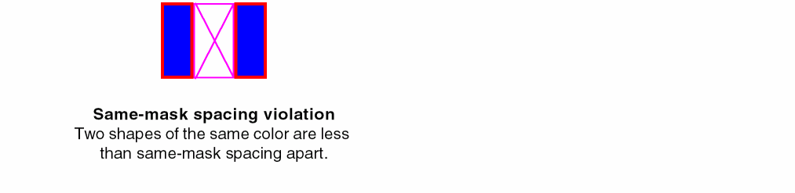
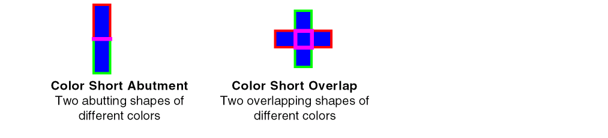

Types of Color Checks
Color checks on a layout are categorized as follows:
-
Color Rule Violations
Same-mask spacing violations occur when the distance between two shapes of the same color is less than the same-mask spacing. Different-mask (diff-mask) spacing violations occur when the distance between two shapes of different masks is less than the diff-mask spacing. Same-mask spacing is less than diff-mask spacing.
 -
Color Shorts
Color shorts are overlaps between shapes with different colors, irrespective of their lock status.
 -
Uncolored Shapes
Uncolored shapes on a multiple mask layer can be reported. - Colorability
Colorability violations occur when the layout topology results in two adjacent shapes in a set of shapes on the same layer to have the same color. This condition is called an odd cycle loop in double patterning technology and is caused by an odd number of shapes in the set. The following example shows an odd cycle loop with different colorings applied, but none of them satisfies the same-mask spacing requirement for all the shapes.
A similar conflict can occur with triple patterning technology, as shown below.
Related Topics
Methods to Check Multiple Patterning Violations
Using the Annotation Browser to View Multiple Patterning Violations
Methods to Fix Multiple Patterning Violations
Methods to Verify the Consistency of Color Assignments
Checking CDF Color and Net Color Constraint
Return to top